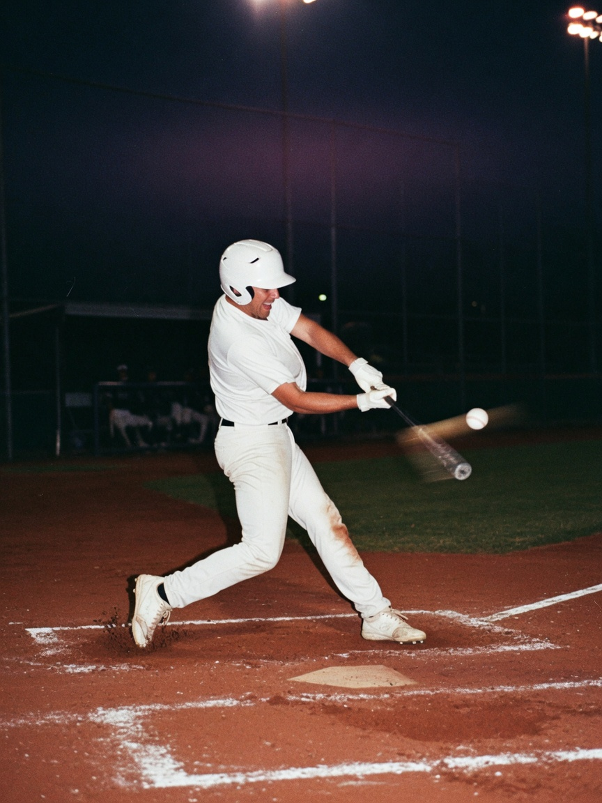
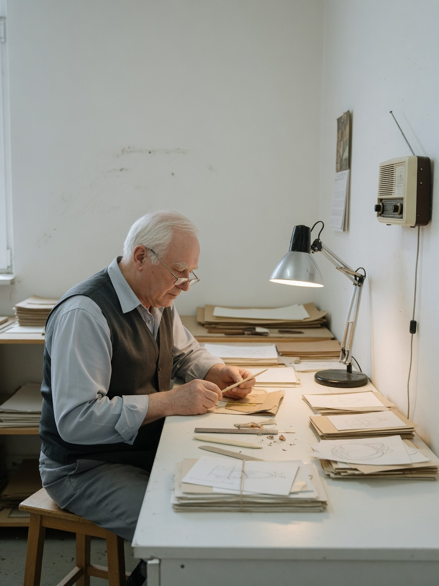
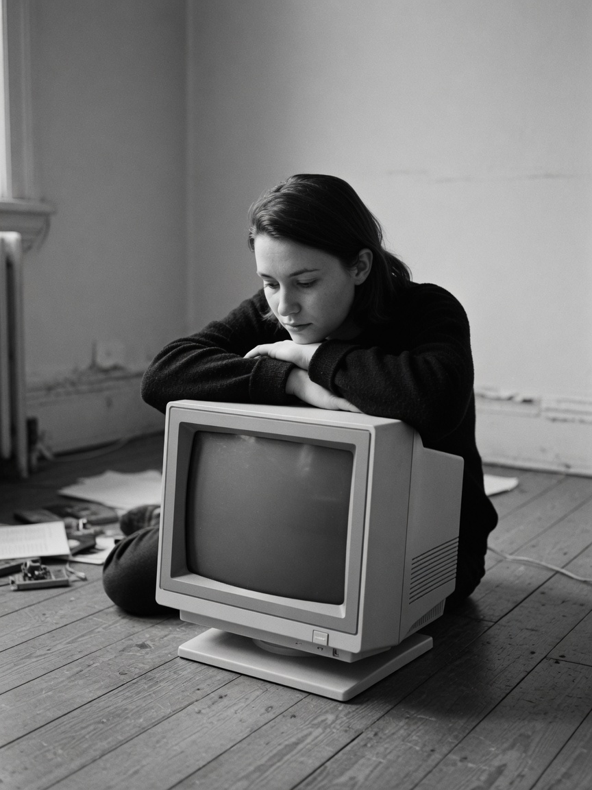
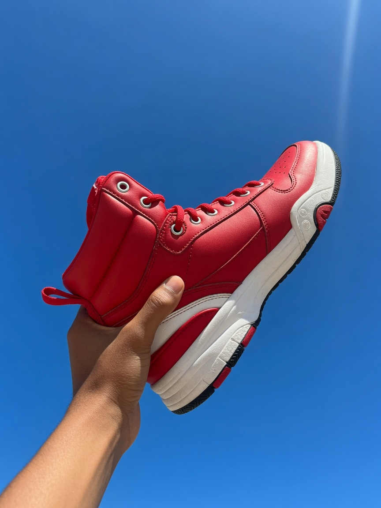
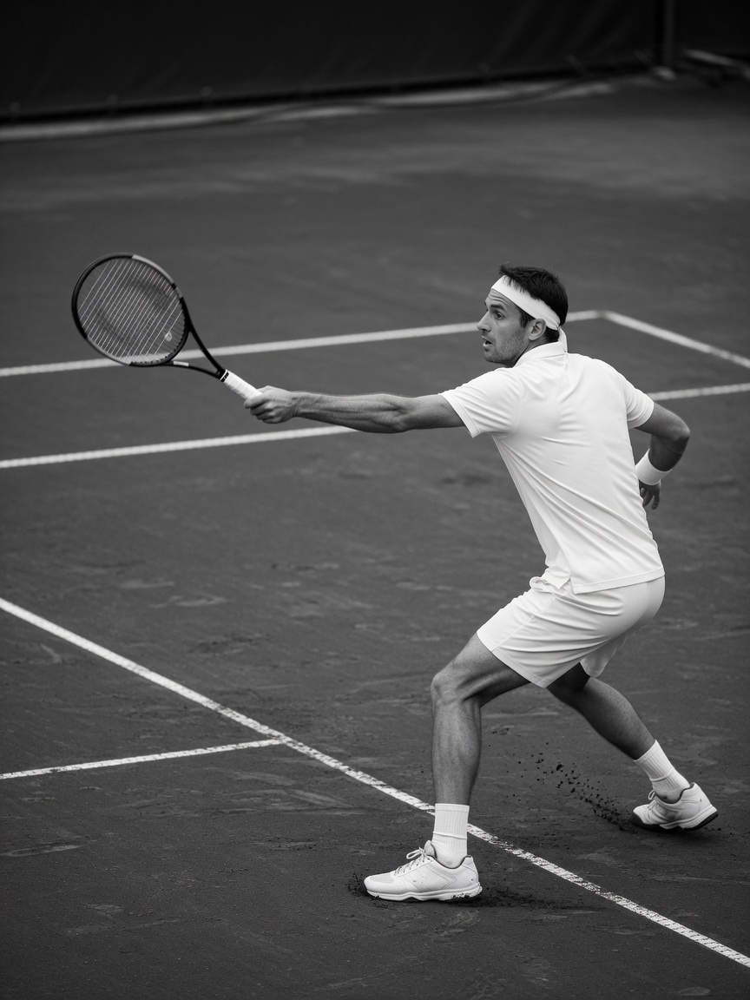
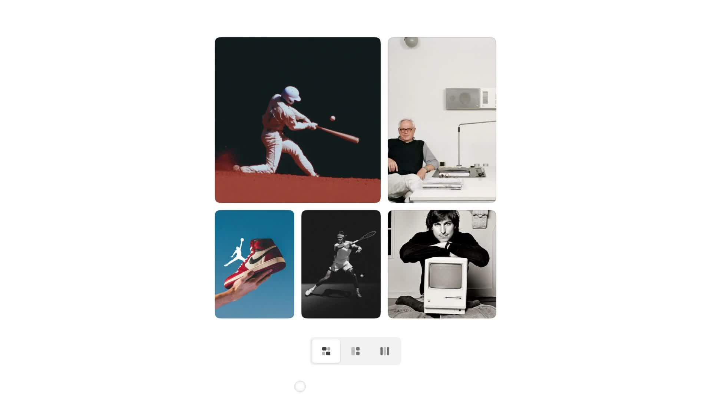
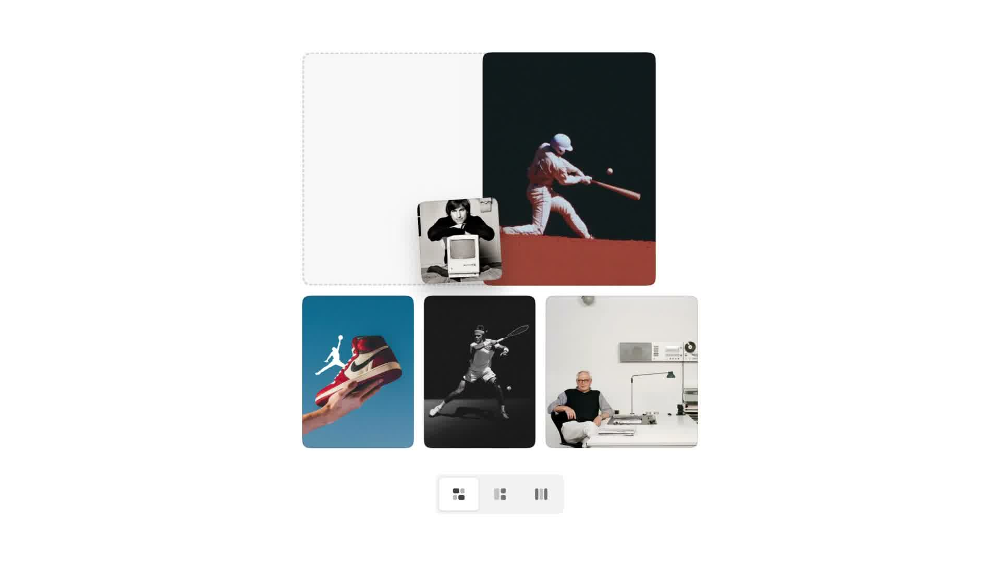
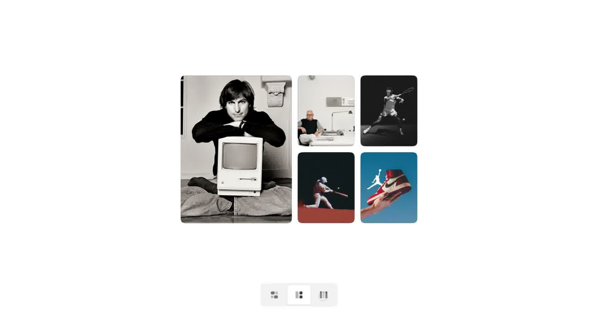

三种排法。拖起来会缩小、微转。虚线框是落点。其余滑过去。





白底。五张照片停在正中，并不铺满。底下一条浅灰胶囊，三个排法。默认是左上大、底下三张。点右边两个，同一组图变成主图加四宫，或五张横排。
原帖 34.1s、1918×1080、60fps。照片是别人的版权图，本页换成五张原件。发明是排法和拖动：抓起来缩小微转，虚线框留在格子里，邻居滑过去让位。

五张图是同一组节点。换排法只改 grid-template 和第一张的跨行跨列。FLIP 记下位置再播过去，550ms power3.inOut。图还是那五张，格子在变。
拖动过阈值才拿起来。拿起的那张变成 128×168，转 −8°，跟着指针。原来的格子换成虚线框。指针经过哪一张，虚线框就插到那一格，其余用同一套 FLIP 让开。松手，那张图长回虚线框的尺寸。
白边按内容来，不把五张拉到全屏宽。横排才把画布加宽。


| 项目 | 取值 |
|---|---|
| 原件 | 34.1s，1918×1080，60fps。五张图，三种排法 |
| 圆角 / 间距 | 18px / 10px。白底 #fff |
| 拼贴 | 三列。第一张占两列。行高 268 / 196 |
| 主图 | 第一张跨两行。右侧 2×2，行高 196 |
| 横排 | 五列等宽，行高 228 |
| 拖起 | 128×168，−8°。位移超过 7px 才拿起 |
| FLIP | 550ms power3.inOut。reduced-motion 为 0 |
#boarddata-layout。同一组五张。FLIP 换格子。#ghost#bar